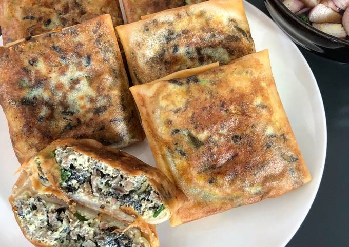

Martabak Telur

Martabak telur is stuffed panfried pancake with beef and egg.
Ingredients
- 8 large spring roll wrappers
- vegetable oil
- ground beef
- 1 white onion, chopped
- 5 cloves garlic, chopped
- 5 eggs
- 1 teaspoon curry powder
- 1 teaspoon sugar
- salt and pepper
Steps
- In a large skillet, heat olive oil on medium-high heat.
Add in the onion and garlic and stir until onion is transluscent and garlic is fragrant.
- Stir in the ground beef. Breaking up the meat with your spatula, cook until beef is no longer pink.
- Add in the pepper, curry powder, salt, and sugar. Stir to combine and adjust seasonings to taste, if needed.
- Stir in the chopped green onions, then immediately remove skillet from the heat.
- Whisk in the beaten eggs, then let it cool. Set aside.